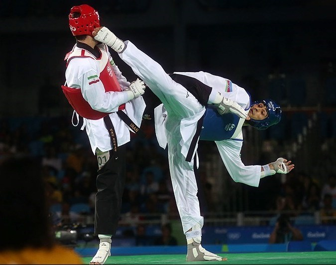

inside of marsal arts evreywon knowes about how you lern to defhend yore self and it can be for dif rent resons or tipes. in takwon do tay= punching kwon= forms do= kiking. thakwondo is not karotey it is simer but not karatey as alot of pepole spesafhy takwondo by karatey (*cofhe * karatey kid.) now kinkngcan be aney wherit can alo be in fhorms kiking combos and sparing. the base line is that if you are with somwon that dos takwondo they can beat you down.